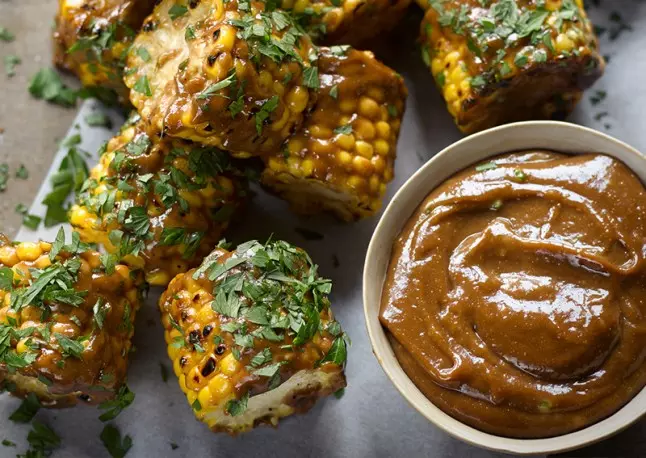

Grilled Corn on The Cob with Miso Mayonnaise

Serves: 4-6 | Prep Time: 15 Minutes | Cook Time: 8 minutes
Ingredients
- 1 egg yolk
- 1 tbsp dijon mustard
- 3 garlic cloves, minced
- ½ tbsp apple cider vinegar
- 2 tbsp tamarind paste
- 250ml grapeseed oil
- 80g white miso paste
- 1 green chilli, de-seeded and finly chopped
- 3 tbsp olive oil
- 4 corn cobs, husks removed and cut into 5cm segments
- 2 tbsp finely chopped parsley
- Flaked kosher salt and blake pepper
Method
- First make the mayonnaise. Place the yolk, mustard, garlic, vinegar and tamarind in the small bowl of a food processor. Turn it on and slowly start adding the grapseed oil, continually pouring in a light stream until half the oil is incorporated.
- With the machine still running, add the miso and continue with the last of the oil until the mayonnaise is thick. Add the chilli and mix until combined.
- Bring a large pan of water to the boil. Add the corn and blanch for three minutes. Drain, pat dry and mix with the olive oil and ¼ tsp salt. Place a chargrill pan on a very high heat. When it starts to smoke, add the corn and chargrill, turning often so that all sides get coloured, for about eight minutes.
- As soon as the corn comes off the chargrill, brush a layer of the mayonnaise all over it, so that it gets a light glaze – about 2 tbsp for all the corn.
- Sprinkle with parsley and eat straight away, dipping the corn in the remaining mayonnaise as you go, or spreading on more with a knife.